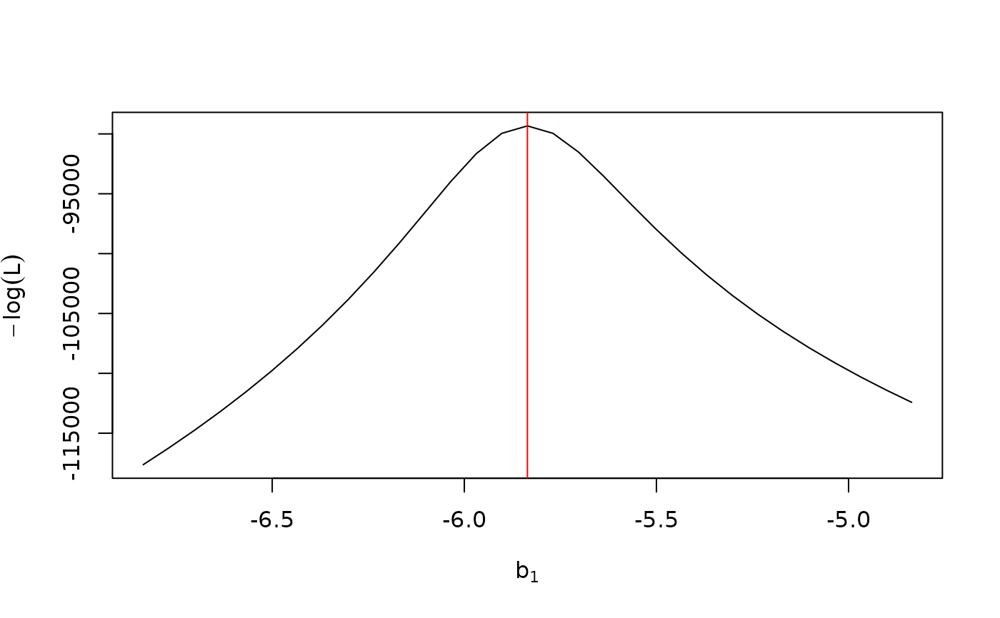
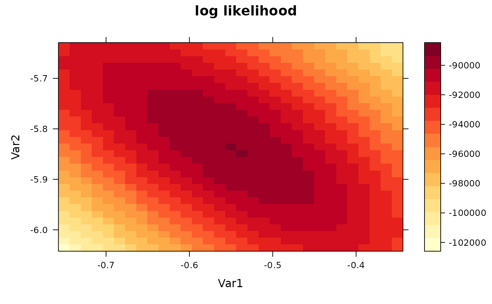

Calculate the log likelihood and its gradient for the vsn model
vsnLikelihood.RdlogLik calculates the log likelihood and its gradient
for the vsn model. plotVsnLogLik makes a false color plot for
a 2D section of the likelihood landscape.
Usage
# S4 method for class 'vsnInput'
logLik(object, p, mu = numeric(0), sigsq=as.numeric(NA), calib="affine")
plotVsnLogLik(object,
p,
whichp = 1:2,
expand = 1,
ngrid = 31L,
fun = logLik,
main = "log likelihood",
...)Arguments
- object
A
vsnInputobject.- p
For
plotVsnLogLik, a vector or a 3D array with the point in parameter space around which to plot the likelihood. ForlogLik, a matrix whose columns are the set of parameters at which the likelihoods are to be evaluated.- mu
Numeric vector of length 0 or
nrow(object). If the length is 0, there is no reference andsigsqmust beNA(the default value). Seevsn2.- sigsq
Numeric scalar.
- calib
as in
vsn2.- whichp
Numeric vector of length 2, with the indices of those two parameters in
palong which the section is to be taken.- expand
Numeric vector of length 1 or 2 with expansion factors for the plot range. The range is auto-calculated using a heuristic, but manual adjustment can be useful; see example.
- ngrid
Integer scalar, the grid size.
- fun
Function to use for log-likelihood calculation. This parameter is exposed only for testing purposes.
- main
This parameter is passed on
levelplot.- ...
Arguments that get passed on to
fun, use this formu,sigsq,calib.
Value
For logLik, a numeric matrix of size nrow(p)+1 by ncol(p).
Its columns correspond to the columns of p.
Its first row are the likelihood values, its rows 2...nrow(p)+1
contain the gradients.
If mu and sigsq are
specified, the ordinary negative log likelihood is calculated using these
parameters as given. If they are not specified, the profile negative log likelihood
is calculated.
For plotVsnLogLik, a dataframe with the 2D grid coordinates and
log likelihood values.
Examples
data("kidney")
v = new("vsnInput", x=exprs(kidney),
pstart=array(as.numeric(NA), dim=c(1, ncol(kidney), 2)))
fit = vsn2(kidney)
print(coef(fit))
#> , , 1
#>
#> [,1] [,2]
#> [1,] -0.5504617 -0.5350711
#>
#> , , 2
#>
#> [,1] [,2]
#> [1,] -5.835777 -5.861253
#>
p = sapply(seq(-1, 1, length=31), function(f) coef(fit)+c(0,0,f,0))
ll = logLik(v, p)
plot(p[3, ], ll[1, ], type="l", xlab=expression(b[1]), ylab=expression(-log(L)))
abline(v=coef(fit)[3], col="red")

plotVsnLogLik(v, coef(fit), whichp=c(1,3), expand=0.2)
